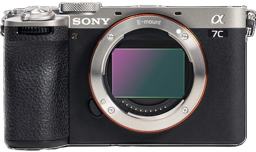
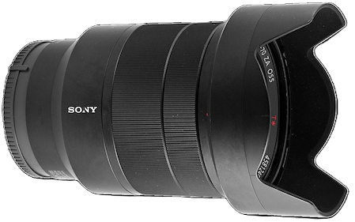

My kit

Sony A7C II
This camera is perfect for my workflow. Its small form factor, beautiful full-frame sensor, and snappy auto-focus allows for maximum mobility while shooting in a fast paced enviroment. Not to mention the eye-catching black and silver body!

Sony FE 24-70mm f/4 ZA OSS Zeiss Vario-Tessar T*
This lens is a great all-rounder, with its sharp Zeiss optics and versitile 24-70mm focal length. With this beauty mounted, I can confidently work without ever having to miss a shot while swapping out lenses.